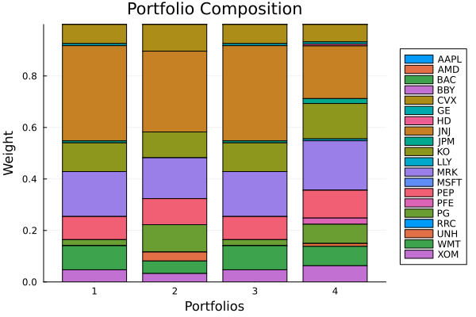
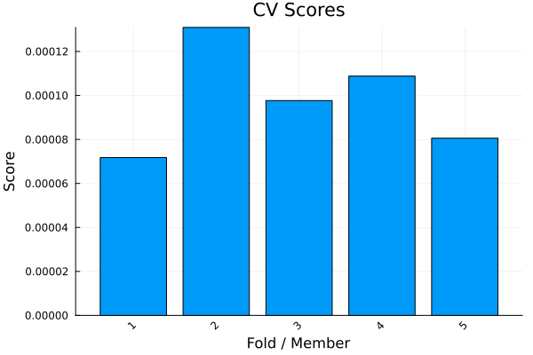
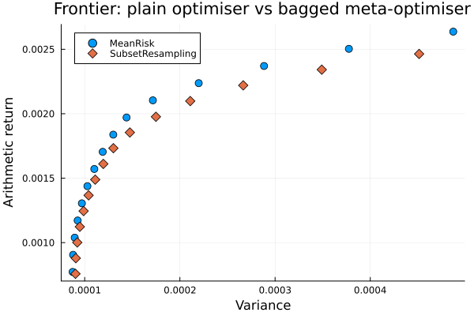

The source files can be found in examples/.
Subset resampling and cross-validation
This example deepens the basic meta-optimiser walkthrough by focusing on two practical questions:
- how stable are the out-of-sample predictions produced by a plain optimiser versus a meta-optimiser when we evaluate them with cross validation?
- what does the efficient frontier look like when the optimiser is a meta-optimiser that resamples the universe before averaging the result?
We use MeanRisk as the benchmark and SubsetResampling as the meta- optimiser. The example also reuses the same clustering/prior setup as the standard meta- optimiser page so the allocations can be compared directly.
Reach for subset resampling, and meta-optimisers generally, when a single full-universe fit feels brittle — when small changes in the estimation window swing the allocation, or when you want a portfolio averaged over many resampled universes rather than committed to one point estimate. Cross-validation here is the tool for checking that stability, not for producing the final portfolio.
using PortfolioOptimisers, PrettyTables, StableRNGsresfmt = (v, i, j) -> begin if j == 1 return v else return isa(v, Number) ? "$(round(v * 100, digits = 3)) %" : v endend;1. ReturnsResult data and shared ingredients
We use the same S&P 500 slice as the other optimiser examples. The shared prior and clustering are computed once and reused everywhere below.
using CSV, TimeSeries, DataFrames, Clarabel, StatisticsX = TimeArray(CSV.File(joinpath(@__DIR__, "..", "SP500.csv.gz")); timestamp = :Date)[(end - 252):end]rd = prices_to_returns(X)slv = [Solver(; name = :clarabel1, solver = Clarabel.Optimizer, settings = Dict("verbose" => false), check_sol = (; allow_local = true, allow_almost = true)), Solver(; name = :clarabel2, solver = Clarabel.Optimizer, settings = Dict("verbose" => false, "max_step_fraction" => 0.95), check_sol = (; allow_local = true, allow_almost = true)), Solver(; name = :clarabel3, solver = Clarabel.Optimizer, settings = Dict("verbose" => false, "max_step_fraction" => 0.9), check_sol = (; allow_local = true, allow_almost = true))]pr = prior(EmpiricalPrior(), rd)clr = clusterise(ClustersEstimator(; alg = DBHT()), pr.X)jopti = JuMPOptimiser(; pe = pr, slv = slv)jopto = JuMPOptimiser(; slv = slv)JuMPOptimiser
pe ┼ EmpiricalPrior
│ ce ┼ PortfolioOptimisersCovariance
│ │ ce ┼ Covariance
│ │ │ me ┼ SimpleExpectedReturns
│ │ │ │ w ┴ nothing
│ │ │ ce ┼ GeneralCovariance
│ │ │ │ ce ┼ SimpleCovariance: SimpleCovariance(true)
│ │ │ │ w ┴ nothing
│ │ │ alg ┼ FullMoment()
│ │ │ w ┴ nothing
│ │ mp ┼ MatrixProcessing
│ │ │ pdm ┼ Posdef
│ │ │ │ alg ┼ UnionAll: NearestCorrelationMatrix.Newton
│ │ │ │ kwargs ┴ @NamedTuple{}: NamedTuple()
│ │ │ dn ┼ nothing
│ │ │ dt ┼ nothing
│ │ │ alg ┼ nothing
│ │ │ order ┴ NTuple{4, Symbol}: (:pdm, :dn, :dt, :alg)
│ me ┼ SimpleExpectedReturns
│ │ w ┴ nothing
│ horizon ┴ nothing
slv ┼ 3-element Vector{Solver}
│ Solver ⋯
│ Solver ⋯
│ Solver ⋯
wb ┼ WeightBounds
│ lb ┼ Float64: 0.0
│ ub ┴ Float64: 1.0
bgt ┼ Float64: 1.0
sbgt ┼ nothing
gbgt ┼ nothing
xbgt ┼ Bool: false
lt ┼ nothing
st ┼ nothing
lcse ┼ nothing
cte ┼ nothing
gcarde ┼ nothing
sgcarde ┼ nothing
smtx ┼ nothing
sgmtx ┼ nothing
slt ┼ nothing
sst ┼ nothing
sglt ┼ nothing
sgst ┼ nothing
tn ┼ nothing
fees ┼ nothing
sets ┼ nothing
tr ┼ nothing
ple ┼ nothing
ret ┼ ArithmeticReturn
│ settings ┼ JuMPReturnsSettings
│ │ scale ┼ Float64: 1.0
│ │ lb ┼ nothing
│ │ rte ┼ Bool: true
│ │ fee ┼ Bool: true
│ │ mic ┴ Bool: true
│ ucs ┼ nothing
│ mu ┴ nothing
sca ┼ SumScalariser()
ccnt ┼ nothing
cobj ┼ nothing
sc ┼ Int64: 1
so ┼ Int64: 1
ss ┼ nothing
card ┼ nothing
scard ┼ nothing
l2c ┼ nothing
lpc ┼ nothing
linfc ┼ nothing
l1 ┼ nothing
l2 ┼ nothing
lp ┼ nothing
linf ┼ nothing
brt ┼ Bool: false
x_src ┼ Symbol: :prior
z_src ┼ Symbol: :data
strict ┴ Bool: false
2. Reference allocations
We compute the plain minimum-variance portfolio and the three standard meta-optimisers. These are the same building blocks as the shorter overview example, but here we will reuse them for cross-validation and frontier comparisons.
res_bench = optimise(MeanRisk(; opt = JuMPOptimiser(; pe = pr, slv = slv)))res_nco = optimise(NestedClustered(; pe = pr, cle = clr, opti = MeanRisk(; obj = MinimumRisk(), opt = jopti), opto = MeanRisk(; obj = MinimumRisk(), opt = jopto)), rd)res_stk = optimise(Stacking(; pe = pr, opti = [MeanRisk(; opt = jopti), HierarchicalRiskParity(; opt = HierarchicalOptimiser(; pe = pr)), InverseVolatility(; pe = pr)], opto = MeanRisk(; obj = MinimumRisk(), opt = jopto)), rd)res_ssr = optimise(SubsetResampling(; pe = pr, opt = MeanRisk(; obj = MinimumRisk(), opt = JuMPOptimiser(; slv = slv)), subset_size = 0.7, n_subsets = 10, rng = StableRNG(123), seed = 42), rd)pretty_table(DataFrame(; :assets => rd.nx, :MinVar => res_bench.w, :NCO => res_nco.w, :Stacking => res_stk.w, :SubsetResampling => res_ssr.w); formatters = [resfmt])┌────────┬──────────┬──────────┬──────────┬──────────────────┐
│ assets │ MinVar │ NCO │ Stacking │ SubsetResampling │
│ String │ Float64 │ Float64 │ Float64 │ Float64 │
├────────┼──────────┼──────────┼──────────┼──────────────────┤
│ AAPL │ 0.0 % │ 0.0 % │ 0.0 % │ 0.0 % │
│ AMD │ 0.0 % │ 0.0 % │ 0.0 % │ 0.0 % │
│ BAC │ 0.0 % │ 0.0 % │ 0.0 % │ 0.0 % │
│ BBY │ 0.0 % │ 0.0 % │ 0.0 % │ 0.0 % │
│ CVX │ 7.432 % │ 10.376 % │ 7.432 % │ 6.786 % │
│ GE │ 0.806 % │ 0.0 % │ 0.806 % │ 0.856 % │
│ HD │ 0.0 % │ 0.0 % │ 0.0 % │ 0.677 % │
│ JNJ │ 36.974 % │ 31.364 % │ 36.974 % │ 20.456 % │
│ JPM │ 0.749 % │ 0.0 % │ 0.749 % │ 1.915 % │
│ KO │ 11.161 % │ 10.028 % │ 11.161 % │ 13.75 % │
│ LLY │ 0.0 % │ 0.0 % │ 0.0 % │ 0.735 % │
│ MRK │ 17.467 % │ 15.876 % │ 17.467 % │ 19.192 % │
│ MSFT │ 0.0 % │ 0.0 % │ 0.0 % │ 0.0 % │
│ PEP │ 8.978 % │ 10.115 % │ 8.978 % │ 10.81 % │
│ PFE │ 0.0 % │ 0.0 % │ 0.0 % │ 2.41 % │
│ PG │ 2.353 % │ 10.609 % │ 2.353 % │ 7.461 % │
│ RRC │ 0.0 % │ 0.0 % │ 0.0 % │ 0.0 % │
│ UNH │ 0.0 % │ 3.483 % │ 0.0 % │ 1.144 % │
│ WMT │ 9.355 % │ 4.863 % │ 9.355 % │ 7.507 % │
│ XOM │ 4.725 % │ 3.285 % │ 4.725 % │ 6.301 % │
└────────┴──────────┴──────────┴──────────┴──────────────────┘The meta-optimisers spread capital more than the plain fit, and SubsetResampling usually smooths it the most because it averages over many smaller universes.
using StatsPlots, GraphRecipesplot_stacked_bar_composition([res_bench, res_nco, res_stk, res_ssr], rd)
3. Cross-validation prediction
We now evaluate the benchmark and the bagged optimiser with explicit cross-validation. The cross_val_predict helper works on estimators, so we can compare the out-of-sample prediction streams directly.
Note that the optimisers we hand it carry no precomputed prior — their JuMPOptimiser has only a solver, so the prior is an estimator (the default EmpiricalPrior) refit on each training fold. This is mandatory: a precomputed prior would have been fit on the whole sample, leaking the test fold into training, so cross-validation disallows the precomputed form and requires the estimator. (See the precomputed-vs-estimator note in the MeanRisk objectives example.)
kfold = KFold(; n = 5)cv_bench = cross_val_predict(MeanRisk(; opt = JuMPOptimiser(; slv = slv)), rd, kfold)cv_ssr = cross_val_predict(SubsetResampling(; opt = MeanRisk(; opt = JuMPOptimiser(; slv = slv)), subset_size = 0.7, n_subsets = 8, rng = StableRNG(123), seed = 42), rd, kfold)scorer = NearestQuantilePrediction(; r = LowOrderMoment(; alg = SecondMoment()))pp_bench = PopulationPredictionResult(; pred = [cv_bench])pp_ssr = PopulationPredictionResult(; pred = [cv_ssr])median_bench = scorer(pp_bench)median_ssr = scorer(pp_ssr)println("MeanRisk cross-val variance = $(expected_risk(LowOrderMoment(; alg = SecondMoment()), cv_bench))")println("SubsetResampling cross-val variance = $(expected_risk(LowOrderMoment(; alg = SecondMoment()), cv_ssr))")plot_cv_scores(LowOrderMoment(; alg = SecondMoment()), cv_bench)plot_cv_scores(LowOrderMoment(; alg = SecondMoment()), cv_ssr)
The scorer returns the prediction closest to the median of the population. On both optimisers that gives us a representative fold without hand-picking one ourselves.
println("Median benchmark fold id = $(median_bench.id)")println("Median SSR fold id = $(median_ssr.id)")Median benchmark fold id = nothing
Median SSR fold id = nothing4. Efficient frontier of a meta-optimiser
The frontier example from the optimiser overview used a single MeanRisk problem. Here we apply the same frontier sweep to the bagged optimiser, which gives us a frontier of bagged portfolios rather than a frontier from a single full-universe fit.
frontier_ret = ArithmeticReturn(; settings = JuMPReturnsSettings(; lb = Frontier(; N = 15)))mr_front = MeanRisk(; opt = JuMPOptimiser(; pe = pr, slv = slv, ret = frontier_ret))ssr_front = SubsetResampling(; pe = pr, opt = MeanRisk(; opt = JuMPOptimiser(; slv = slv, ret = frontier_ret)), subset_size = 0.7, n_subsets = 8, rng = StableRNG(123), seed = 42)res_mf = optimise(mr_front)res_sf = optimise(ssr_front, rd)rf = factory(Variance(), pr)xs_m = [expected_risk(rf, w, pr.X) for w in res_mf.w]ys_m = [expected_return(ArithmeticReturn(), w, pr) for w in res_mf.w]xs_s = [expected_risk(rf, w, pr.X) for w in res_sf.w]ys_s = [expected_return(ArithmeticReturn(), w, pr) for w in res_sf.w]pretty_table(DataFrame(; :point => 1:length(res_mf.w), :MeanRisk_max_w => [maximum(w) for w in res_mf.w], :SubsetResampling_max_w => [maximum(w) for w in res_sf.w]); formatters = [resfmt])plot(xs_m, ys_m; seriestype = :scatter, marker = (:circle, 5), label = "MeanRisk", xlabel = "Variance", ylabel = "Arithmetic return", title = "Frontier: plain optimiser vs bagged meta-optimiser")plot!(xs_s, ys_s; seriestype = :scatter, marker = (:diamond, 6), label = "SubsetResampling")
5. A risk-measure slot that follows the refit
Section 3 made the point that cross-validation disallows a precomputed prior. It does not, and cannot, disallow a precomputed matrix pasted into a risk measure: Variance(; sigma = S) is a legitimate configuration, and nothing distinguishes a matrix the caller measured elsewhere from one fitted on the very sample the portfolio is about to be scored on.
So a prior-derived slot takes a second form — the estimator that computes the value, rather than the value. That is a DeferredQuantity, and it is resolved against whatever prior the optimisation actually runs on: per subset, per fold. The struct that reaches the solver still holds a plain matrix. What changed is when the matrix is computed.
The difference only shows for an estimator whose answer depends on the universe or the window it sees. Denoising is one: it clips the eigenvalue bulk at a threshold derived from the aspect ratio T / N, so the 14-asset block of a 20-asset fit is not a 14-asset fit.
ce_dn = PortfolioOptimisersCovariance(; mp = MatrixProcessing(; dn = Denoise(; alg = FixedDenoise())))sigma_full = cov(ce_dn, pr.X)idx = 1:14sigma_refit = cov(ce_dn, view(pr.X, :, idx))sigma_slice = view(sigma_full, idx, idx)println("Largest entry of the full-universe covariance = $(maximum(abs, sigma_full))")println("Refit vs sliced, on a 14-asset subset = $(maximum(abs, sigma_refit .- sigma_slice))")Largest entry of the full-universe covariance = 0.0015659674409100352
Refit vs sliced, on a 14-asset subset = 0.00011166025555062086Inside a resample
SubsetResampling takes a view of the problem before the prior is computed, so a stated matrix crosses that boundary sliced, while a Deferred Quantity crosses unresolved and fits on the subset it lands in.
ssr_rm = r -> SubsetResampling(; pe = pr, opt = MeanRisk(; obj = MinimumRisk(), r = r, opt = JuMPOptimiser(; slv = slv)), subset_size = 0.7, n_subsets = 10, rng = StableRNG(123), seed = 42)res_pasted = optimise(ssr_rm(Variance(; sigma = sigma_full)), rd)res_deferred = optimise(ssr_rm(Variance(; sigma = ce_dn)), rd)pretty_table(DataFrame(; :assets => rd.nx, :pasted_matrix => res_pasted.w, :deferred_estimator => res_deferred.w); formatters = [resfmt])┌────────┬───────────────┬────────────────────┐
│ assets │ pasted_matrix │ deferred_estimator │
│ String │ Float64 │ Float64 │
├────────┼───────────────┼────────────────────┤
│ AAPL │ 0.0 % │ 0.0 % │
│ AMD │ 0.0 % │ 0.0 % │
│ BAC │ 0.194 % │ 0.229 % │
│ BBY │ 0.0 % │ 0.0 % │
│ CVX │ 7.342 % │ 7.005 % │
│ GE │ 0.044 % │ 0.036 % │
│ HD │ 0.719 % │ 0.691 % │
│ JNJ │ 18.746 % │ 19.666 % │
│ JPM │ 0.708 % │ 0.573 % │
│ KO │ 17.102 % │ 15.623 % │
│ LLY │ 0.039 % │ 0.163 % │
│ MRK │ 16.24 % │ 19.116 % │
│ MSFT │ 0.0 % │ 0.0 % │
│ PEP │ 14.483 % │ 13.508 % │
│ PFE │ 0.299 % │ 0.961 % │
│ PG │ 11.638 % │ 9.076 % │
│ RRC │ 0.0 % │ 0.067 % │
│ UNH │ 0.387 % │ 1.147 % │
│ WMT │ 3.732 % │ 3.512 % │
│ XOM │ 8.325 % │ 8.629 % │
└────────┴───────────────┴────────────────────┘Inside a fold
The same slot under cross-validation. Here the pasted matrix is not merely stale — it was fitted on all 252 observations, so every test fold sits inside it. The estimator refits on the training fold alone.
cv_pasted = cross_val_predict(MeanRisk(; obj = MinimumRisk(), r = Variance(; sigma = sigma_full), opt = JuMPOptimiser(; slv = slv)), rd, kfold)cv_deferred = cross_val_predict(MeanRisk(; obj = MinimumRisk(), r = Variance(; sigma = ce_dn), opt = JuMPOptimiser(; slv = slv)), rd, kfold)sm = LowOrderMoment(; alg = SecondMoment())println("Pasted-matrix cross-val variance = $(expected_risk(sm, cv_pasted))")println("Deferred-estimator cross-val variance = $(expected_risk(sm, cv_deferred))")Pasted-matrix cross-val variance = 8.908920388745091e-5
Deferred-estimator cross-val variance = 9.295790278219274e-5The pasted matrix scores better, and that is the warning rather than the result: it saw the test folds. The deferred estimator's larger number is the honest one.
Every prior-derived slot on a risk measure behaves this way — mu, sigma, kt and sk. A measure with two or more deferrable slots takes a prior estimator in pe instead, and one fit fills every slot the measure leaves unstated:
Kurtosis(; pe = EmpiricalPrior()) # mu and kt from one fitDistributionValueatRisk(; pe = EmpiricalPrior()) # mu, sigma and chol from one fitSlots stated by hand are left alone, and nothing makes them agree with each other. Each measure's docstring carries that warning; ADR 0051 records why the design warns rather than refuses.
Summary
Meta-optimisers help when a single fit feels too brittle.
cross_val_predictshows how the benchmark and the bagged optimiser behave under repeated out-of-sample evaluation.SubsetResamplingsmooths allocations by averaging many subset solves.- Frontier sweeps still work on the meta-optimiser, so you can compare its trade-off curve against the plain optimiser instead of choosing only one portfolio.
- A prior-derived slot can hold the estimator rather than the value, so it refits with every subset and every fold instead of pinning one full-sample answer.
This page was generated using Literate.jl.